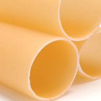
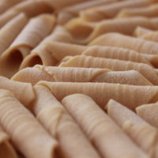
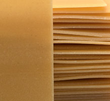
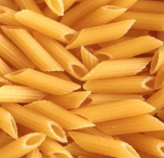
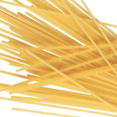
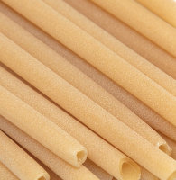

Cappelletti

I cappelletti sono un formato di pasta all'uovo ripiena tradizionale così
chiamati per la forma caratteristica che ricorda un cappello. Si ottengono
tagliando la sfoglia di pasta in quadrati, al centro dei quali viene posto
il ripieno. La pasta viene quindi piegata in due a triangolo, unendo poi,
sovrapponendole, due estremità. Vengono serviti tradizionalmente
n brodo di carne.
Rispetto ai tortellini, hanno una diversa forma, maggiori dimensioni,
pasta più spessa e ripieno differente.
Umbria
In Umbria i cappelletti in brodo di cappone sono considerati il piatto tipico
anche il giorno di Natale e Capodanno. A differenza della Romagna,
dove il ripieno è confezionato con formaggi, la ricetta umbra prevede in
aggiunta carne mista: di vitello, di tacchino o pollo e lombo di maiale.
Romagna
Chiamati caplét in romagnolo, seguono ricette leggermente diverse nel ripieno
generalmente a base di formaggio e ricotta, speziati con noce moscata e scorza
di limone grattugiata, in qualche caso con aggiunta di petto di cappone,
o altra carne. Nel faentino hanno un ripieno (e' pin o e' batù) di formaggi
morbidi, parmigiano, noce moscata e senza alcun tipo di carne e si consumano
in brodo esclusivamente di pollo.

Aneletti, sono un tipo di pasta al forno chiamata appunto pasta al forno in
Sicilia tipica di Palermo e della sua provincia ma diffusi anche nel resto
della Sicilia. Vengono consumati molto in ambito familiare soprattutto nelle
giornate di festa per via della lunga preparazione richiesta.

Cannelloni, sono un formato di pasta di forma cilindrica. Il prodotto viene
farcito con un ripieno salato che nella ricetta classica comprende un impasto
di ricotta e spinaci oppure di carni macinate. È poi coperto con un sugo di
pomodoro e salsa besciamella, e infine cotto al forno. Nel Lazio, i cannelloni
sono un formato di pasta fresca all'uovo.

Bucatini, sono tipici della città di Roma che li abbina a condimenti forti e
semplici (cacio e pepe, amatriciana, carbonara). È una pasta di semola di grano
duro. I tempi di cottura sono più o meno gli stessi degli spaghetti perché,
pur essendo più grossi di questi ultimi, il loro foro centrale favorisce il
passaggio dell'acqua (durante la cottura).

Fusilli, sono un tipo di pasta arricciata, originario dell'Italia meridionale.
Venivano lavorati nelle cucine delle famiglie più abbienti. Quando si volevano
gustare fusilli perfetti, si convocavano donne specializzate in quest’arte
e se ne ammirava la veloce manualità

Garganelli, (in dialetto romagnolo: garganéi" oppure "macaró ruzlé") sono un
formato di pasta all'uovo tipica della Romagna, di forma tubolare con una
caratteristica rigatura perpendicolare. Vengono ottenuti arrotolando una
piccola losanga di sfoglia intorno ad un bastoncino che viene rigato
pressandolo su un pettine da tessitura oppure su un rigagnocchi in legno.

Lasagne, o, più raramente, lasagna o lagana (dal latino làganum e dal greco
antico λάγανον, láganon, «floscio, molle»), si indica un particolare formato
di impasto, ottenuto tagliando in grossi quadrati o rettangoli la sfoglia di
pasta all'uovo. Costituiscono il più antico formato di pasta prodotto
in Italia, potendosene trovare traccia già in epoca greco-romana.

Maltagliati, la parte di sfoglia che rimane, perché non permette di ricavarne
delle tagliatelle, (generalmente i bordi), viene tagliata in modo irregolare
tanto da ricavarne pezzetti di pasta del tutto disomogenei (da cui il nome)
e trattandosi per lo più delle aree perimetrali della sfoglia,
anche lo spessore è disomogeneo.

Orecchiette, sono un tipo di pasta tipico delle regioni Puglia e Basilicata,
la cui forma è approssimativamente quella di piccole orecchie, da cui deriva
appunto il nome. La loro dimensione è, mediamente, di circa 3/4 di un dito
pollice, e si presentano come una piccola cupola di colore bianco, con il
centro più sottile del bordo e con la superficie ruvida.

Penne, rappresentano uno dei pochi formati di pasta di cui si conosce per
certo data e luogo di nascita: nel 1865, infatti, un produttore di pasta di
Genova, brevettò una macchina da taglio diagonale di sua invenzione.
Invenzione importante poiché permetteva di tagliare in questa forma la
pasta fresca senza schiacciarla, produceva in una dimensione variabile
tra mezze penne da 3 cm e penne da 5 cm.

Spaghetti, sono un particolare formato di pasta prodotta esclusivamente con
semole di grano duro e acqua, dalla forma lunga e sottile e di sezione tonda.
Pur con le ovvie varianti a seconda del produttore,
il calibro cresce generalmente in quest'ordine: fili d'angelo o capellini
(detti anche capelli d'angelo), spaghettini, spaghetti, spaghettoni,
vermicelli e vermicelloni.

Tagliatelle, sono una pasta all'uovo tipica dell'Emilia e diffusa nella cucina
tradizionale del Centro e Nord Italia. Il loro nome deriva dal verbo
"tagliare", dato che tradizionalmente si ottengono stendendo la pasta in
sfoglia sottile e tagliandola, dopo averla arrotolata.

Ziti, sono un tipo di pasta di grano duro, di forma allungata, tubolare e
cava e con superficie liscia come i bucatini ma di diametro maggiore,
un po' più stretti dei rigatoni ma più larghi dei mezzani. Anche se
confezionati come pasta lunga, la tradizione culinaria dell'Italia meridionale
vuole che prima di cuocerli li si spezzi manualmente nel piatto.